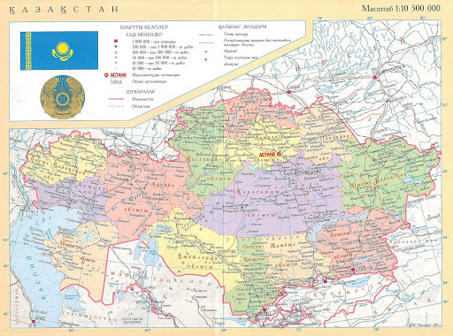
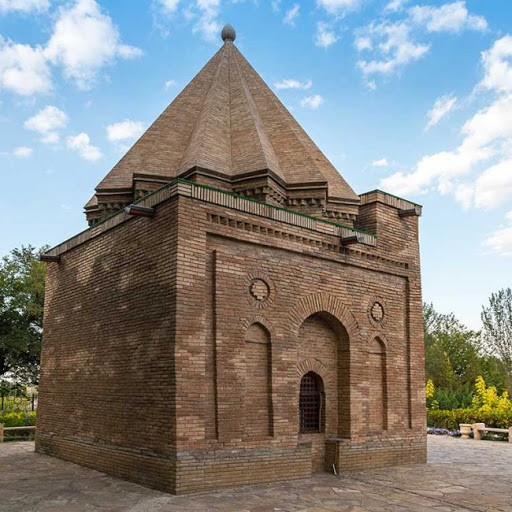
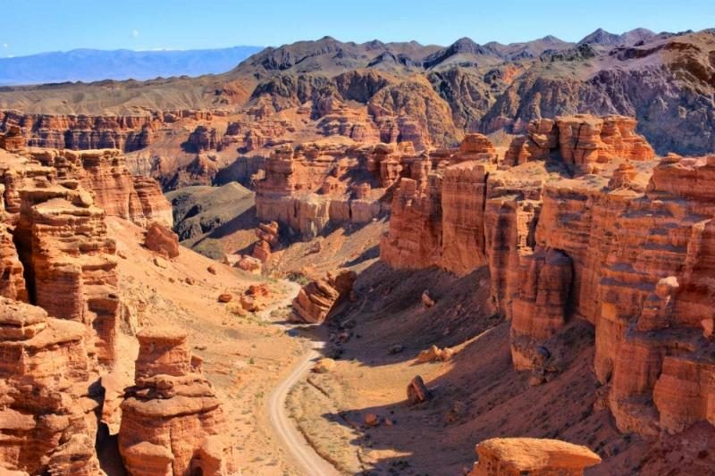
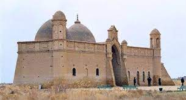
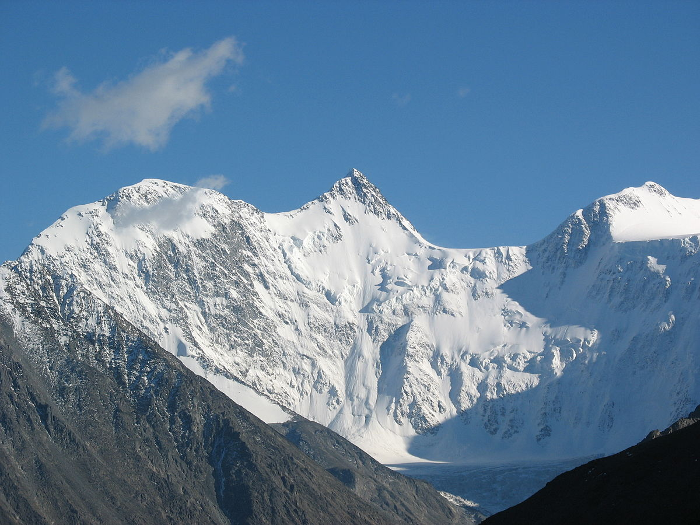
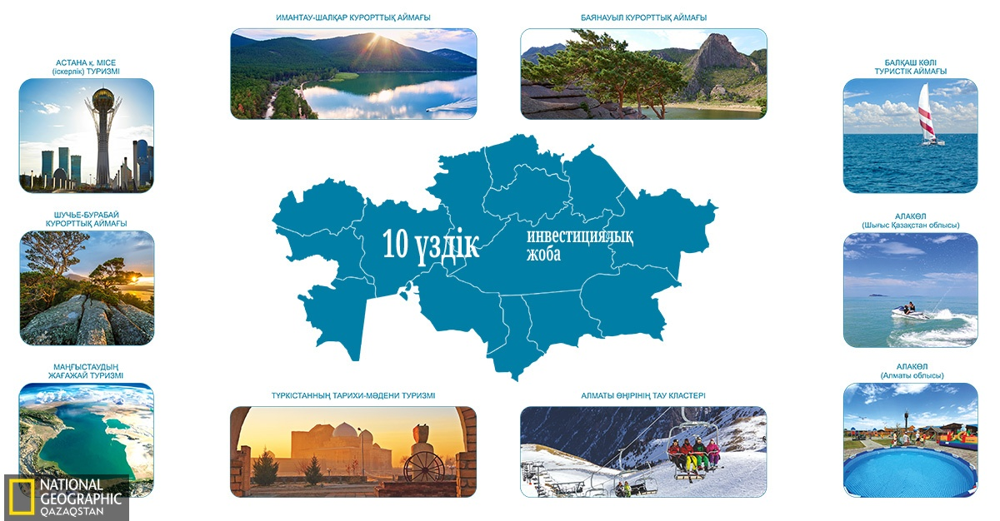

Қазақстан – биіктігі мыңдаған метрге жететін шыңдары және мұздықтарынан, ұшы қиыры жоқ даласы мен адамды таңғалдыратын каньондарына дейін адам сенгісіз табиғи сұлулық ұсынатын ел.Қазақ елінің ұшы қиыры көрінбейтін жері көпшілік шетелдік ойлайтындай теп-тегіс далалық емес, керісінше өзгеріп отыратын түрлі әсемдіктерге толы. Қазақстанда Еуропадағы секілді Альп тауларын, Африкадағы секілді сусылдаған құм төбелерін, Америкадағы секілді каньон-шатқалдар немесе адам аяғы бастаған мидай дала,адамды естен тандыратын құпиялы,қадір-қассиетті биік жерлерді кездестіру – қалыпты жағдай. Осындай адам тойғысыз көріністер елдің шетелдерге таныстырылуына да үлкен үлес қосады. Сонымен бірге туризм секторының дамуына да пайдасы мол. Бүгінгі сайтымда сол жерлер туралы ақпаратты беремін.Сайтымды осындай бір эпилогпен бастағым келіп отыр:Еліңнің ұлы болсаң, еліңе жаның ашыса, адамзаттық намысың болса, қазақтың ұлттық жалғыз мемлекетінің нығайып-көркеюі жолында жан теріңді сығып жүріп, еңбек ет. Жердің де, елдің де иесі өзің екеніңді ұмытпа!

КИЕЛі ЖЕРЛЕР
"Қожа Ахмет Яссауи кесенесі - ортағасырлық сәулет өнері ескерткіші. Түркістан қаласында орналасқан. 1396-1399 жылдары Әмір Темірдің бұйрығымен Қожа Ахмет Яссауи қабірінің басына тұрғызылған. Көптеген жазба деректерге қарағанда, болашақ құрылыстың жобасын жасауда Әмір Темір тікелей өзі қатысып, негізгі өлшемдерді анықтаған көрінеді. Кесене - үлкен порталды-күмбезді мемориалдық құрылыс. Архитектуралық жергілікті дәстүрді жете меңгерген парсылық шеберлердің жобасы құрылысқа негіз етіп алынған. Кесене оңтүстік-шығыстан солтүстік-батысқа қарай созылып жатыр. Ені - 46,5 м, ұзындығы - 65 м. Күйдірілген шаршы кірпіштен өрілген. Кесене жобасының ерекшелігі - онда Орталық Азия сәулет өнерінде бұрын-соңды ұшыраспаған шатыр жабу тәсілдері қолданылған. Ескерткіште күмбезді, аркалы элементтер мол. Сәулетші-шеберлер тек аркалы күмбезді жүйенің өзіне сан түрлі әдістерді қолданған."
Бабажы-қатын кесенесі – Қазақстандағы 10—11 ғасырлардан сақталған сәулет өнері ескерткіші. Тараз қаласынан 18 км қашықтықтағы Айша бибі кесенесінің маңында орналасқан.Кесене сәулеттік композицияның қарапайымдылығымен, монументтілігімен және пішіндердің аса әсемдігімен ерекшеленеді. Көлемді композицияның тұрақтылығы мен тақтатастан жасалған төсеніші бар тас іргетастан тұрғызылуының арқасында кесене осы уақытқа дейін сақталған. Оның шаршы тұрпаттас ғимараты он алты қырлы жұмыр қабырғада орналасқан қырлы күмбезбен көмкерілген; қасбет қабырғаларының беті жерге жетпейтін қуыстармен, әшекейлеп қаланған бойтұмарлармен безендірілген. Бас қасбеттің ортасында кесенеге баратын дөңгелек қақпа тұрғызылған. кесененің бас қасбетінің парапетінде араб тілінде: «Бұл Бабаджа-Хатун қабірі. Оны салушы...» деген жазу қалдықтары сақталған
Шарын шатқалы – Алматы облысындағы ең қызықты табиғи нысандардың бірі. Шатқал шөгінді жыныстардан тұрады, олардың жасы шамамен 12 миллион жыл! Күн ұясына батар сәтте шатқал қабырғалары таңқаларлық реңктерге боялады. Туристердің ең көп баратын жері - "Қорғандар аңғары". Шарын шатқалы Солтүстік Америкадағы Колорадоның үлкен шатқалына (Grand Canyon) ұқсас келеді. Шарын американдық егізінен кішірек, десек те «Қорғандар аңғары» өзіне ғана тән қайталанбас сұлулығымен ерекшеленеді. Сондай-ақ, реликті шаған тоғайы сақталған «Темірлік», «Айлы алқап» және «Құртоғай» шатқалдарының керемет көріністерінен құр қалмауға кеңес береміз.
Сайрам (Исфиджаб, Испиджаб) – Оңтүстік Қазақстанның орта ғасырдағы ірі қалаларының бірі болған. Жұрты қазіргі Сайрам ауылының Оңтүстік-батысында, Шымкент қаласынан 12 км жерде. Сайрам жайлы алғашқы дерек Махмұд Қашқаридің «Диуани лұғат ат-түрік» атты еңбегінде кездеседі. Онда: «Сайрам – Исфиджаб деп аталатын ақ қаланың аты» делінген. Демек, Сайрам – Исфиджабтың кейінгі аты. 15 – 18 ғасырларда қазақ хандықтары кезінде Сайрам ірі сауда, қолөнер және діни орталық болған. Зерттеу жұмыстарын 1923 жылы П.П. Иванов, 1925 жылы М.Е. Массон, 1947 жылы Н. Бернштам басқарған. Оңтүстік Қазақстан археологиялық экспедициясы жүргізген қазба жұмыстары барысында айналасы төрт қақпалы дуалмен қоршалған, көлемі 28 га жерді алып жатқан қала орны анықталған. Қала ішінде көптеген мазарлар сақталған. Ең көнесі – Падишаһ Мәлік баба мазары. Бұл ескерткіштер 9 – 18 ғасырларға жатады. VI ғасырда тез өсіп- жетілген Испиджаб оңтүстіктегі ірі сауда және мәдениет орталығына айналды. VII ғасырда Орта Азияға арабтар келген кезде бұл қала гүлденіп тұрған еді.714 жылы араб әскерінің қолбасшысы Кутейба Шаш(қазіргі Ташкент) қаласын алғаннан кейін Испиджабқа үлкен жорық жасады. Бірақ бұл төңіректегі елдің күшті қарсылығы арқасында көп ұзамай кейін шегінді. Испиджабты өз резиденциясына айналдырмақшы болған араб қолбасшысының жоспары жүзеге аспады. IX ғасырдың басында Испиджаб қарлұқ мемлекетінің құрамына енді.840 жылы қарлұқ көсемі және Испиджаб басшысы Білге Құл Қадырхан қаған атағын алды.Бірақ сол жылы Испиджаб Орта Азиядағы саманилер шабуылына ұшырады.Саманилермен болған шайқаста Білге Құл Қадырхан қаза табады.Мұнан кейін мемлекет билігіне оның екі ұлы таласты. Үлкен ұлы Базар Арсыланхан Баласағұн (Шу өзенінің бойындағы қала) аймағын билейді,ал екінші ұлы Оғұлшақ Қадырхан Тараз (бұрынғы Талас қаласы) аймағын билейді.Тараз қаласын 993-жылы саманилер басып алғанда, Оғұлшақ Қашқарияға қашуға мәжбүр болады. 840 жылы саманлердің Самарқандағы билеушісі Нұх ибн Асад Испиджабты жаулап алады.Бұл аймақты жер өңдеу мәдениеті сол заманда аса күшті дамыған болатын. Самани билеушісі Испиджабты және оның аймағындағы егістік(жүзім мен астық) жерлерді сыртқы шапқынылықтардан қорғау үшін көптеген қорғандар соқтырды. Алайда Испиджаб Самани мемлекетіне түгелдей бағынышты болған жоқ. Қала және оның аймағын жергілікті түркі тайпалары биледі. Испиджаб аймағы өте үлкен болды. Оның шекарасы солтүстік-батыста Сауранға дейін, ал шығыста Талас аймағына дейін созылды. Испиджаб аймағы саманилер арқылы мұсылман діні тарады да,енді ол оңтүстіктегі ірі сауда және мәдениет орталығы ғана емес, сонымен қатар үлкен діни орталыққа айнала бастады. Х ғасырдың ақырында, яғни 990 жылы Испиджаб Қарахан мемлекетінің қарамағына енді. Қарахан әскері саманилерді Испиджаб аймағынан түгелдей ығыстырды.
Мұзтау шыңы – Қазақ Алтайының ең жарқын бөлігі, өр Алтайдың ғана емес, бар Сібірдің ең биік нүктесі. Әлемнің түкпір-түкпіріндегі саяхатшылар, ғалымдар, эзотериктер мен альпинистер осынау екібасты шыңға бағзы замандардан-ақ үлкен қызығушылықтарын танытып келеді. Мұзтау дұрыс емес пирамида пішініндегі Батыс (4435 м) және Шығыс (4506 м) шыңдардан құралған, екеуінің арасында биіктігі 4000 метрге төмендейтін «Мұзтау ертоқымы» еңісі орналасқан. Орыс ізашарлары қар құрсауындағы шыңды алғашында «Белуха» деп атаған екен. Бүгінде Мұзтаудың бауырайына сан түрлі жаяу, атты, тіпті тікұшақ жорықтары ұйымдастырылып жүр.
Мына бейнежазбадан тағы басқа киелі жерлер туралы толығырақ біле аласыз
Осы жерлерге баратын болсаңыз,өзіңізбен:
жеке куәлік немесе төлқұжат болуы керек; жылы киім (жемпір, пиджак немесе ветровка, шалбар, жылы шұлық); ыңғайлы аяқ киім (мүмкін болған жағдайда, саяхат керек заттарды алыңыз)кейбір баратын жолдар жаңбырдан кейін жол тайғақ болуы мүмкін сондықтан аяқ киіміңізге назар аударыңыз;плащ; және, әрине, өз камераңызды, бейнекамераңызды алуды ұмытпаңыз.Баратын нысаныңыз туралы толық ақпаратты жинап,саяхатқа шыға беріңіз

Басқада көрікті жерлер:
Сайт соңы
пайдаланылған әдебеиеттер:ашық Википедия
Адилжанова Шехназ Аскаровна
номер:87789354306
©
Shehnaz Adilzhanova